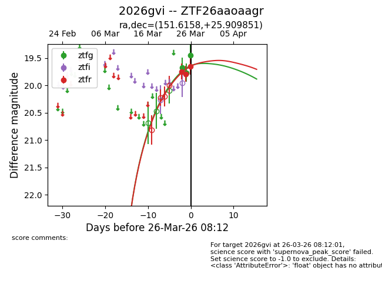
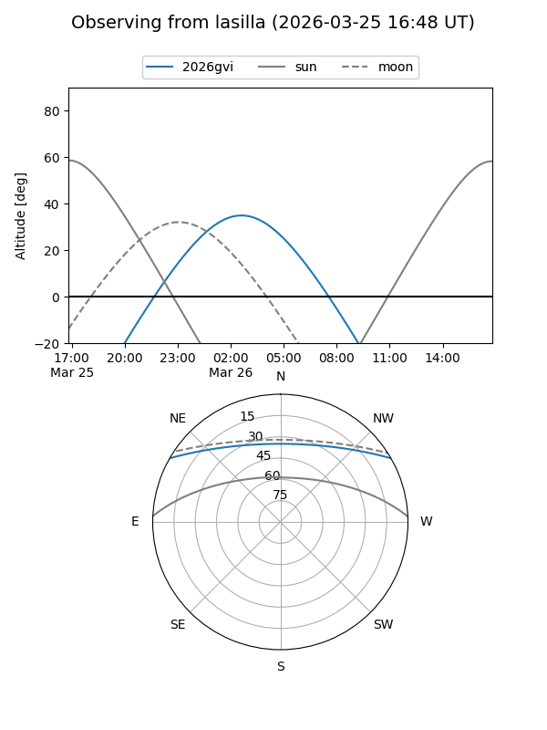
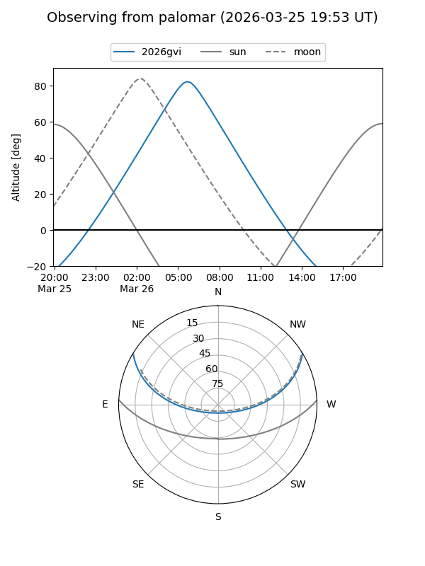
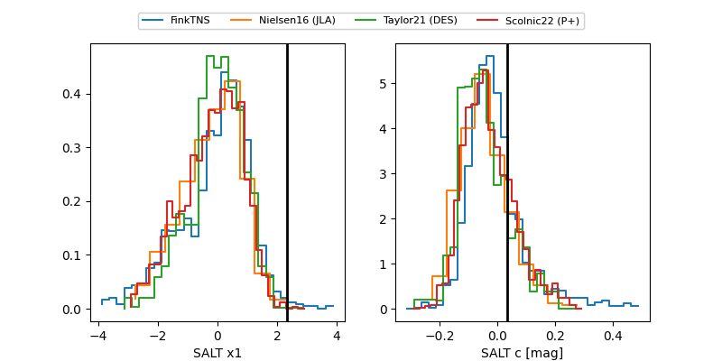

2026gvi
Target 2026gvi at 2026-03-26 08:14
Aliases and brokers:
FINK: link
Lasair: link
ALeRCE: link
TNS: link
YSE: link
alt names
ZTF26aaoaagr (ztf,fink_ztf)
2026gvi (tns,yse)
Coordinates:
equatorial (ra, dec) = 151.6158,+25.90985
equatorial (HMS+DMS) = 10:06:27.79,+25:54:35.46
galactic (l, b) = (205.2022,+53.24223)
Flags:
Photometry:
last ztfg=19.45, ztfr=19.66
3 ztfg, 3 ztfr detections
Lightcurve

Visibility


Additional plots
